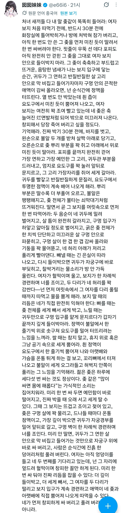

전세계인들이 감동의 눈물을 쏟아내는 중

전세계인들이 감동의 눈물을 쏟아내는 중
역시 귀두 백보지의 나라

저게 비급이지
글레같은련
딸아라 ㅋㅋㅋ 번역시발 ㅋㅋㅋㅋ
이 새끼 바벨탑에서 전세계 남자들에게 섹스비전서를 전수해주고 있어
난 오히려 안싸고 오래가서문제
딸좀 그만쳐라 너는
그리고 누워서 허벅지에 힘주면서 사정하니까 지루가 생기는거임
맞음 딸쟁이임
왜 옛날부터 중국의 지도자들이 글을 탄압했는지 알거같음 ㅋㅋ
프로 딸쟁이는 지루가 기본장착되어있기 때문에 굳이 하지 않아도 된다
난 지루라서 힘드렁
오 임신개꿀팁이네 ㅋㅋㅋㅋ
처음 할 때에는 부고환에 차 있는 애들도 나갈 시간이 있다보니,
ㅋㄷ없이 하다가, 나온다 싶을 때 빼도 임신확률이 매우 낮음.
질외사정법 확률이 드라마틱하게 높은 유일한 방법.
근데 연타전 하거나, 먼저 한발 빼고 한다?
나온다 싶을 때 빼면 늦음.
심지어 그 전 상태에도 차 있던 애들이 밀려 나오다보니 늦음ㅋ
출산율 높이려는 개붕이들은 무시하고 지나가
ㄷㄷ
무협 선협 축협 섹협 폰협